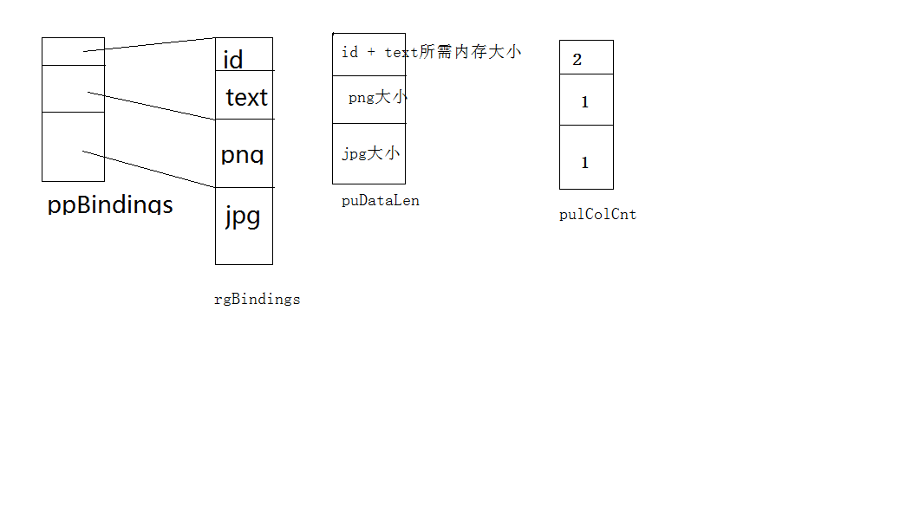

现代数据库系统除了支持一些标准的通用数据类型以外，大多数还支持一种称之为BLOB型的数据。
BLOB全称为big large object bytes, 大二进制对象类型，这种类型的数据通常用于存储文档、图片、音频等文件，这些文件一般体积较大，保存这些文件可以很方便的管理和检索这类信息。在MS SQLSERVER中常见的BLOB数据类型有text、ntext(n表示unicode)、image、nvarchar、varchar、varbinary等。其中image基本可以用来保存一切二进制文件，比如word、Excel、音频、视频等等类型。
针对BLOB型数据，OLEDB也提供了对它的支持
使用BLOB型数据的利弊
一般数据库对BLOB型数据有特殊的处理方式，比如压缩等等，在数据库中存储BLOB数据可以方便的进行检索，展示，备份等操作。但是由于BLOB型数据本身比较大，存储量太大时数据量太大容易拖慢数据库性能，所以一般的说法都是尽量不要在数据库中存储这类信息。特别是图片，音视频。针对这类文件一般的做法是将其保存在系统的某个路径钟中，而在数据库中存储对应的路径
操作BLOB型数据的一般方法
一般针对BLOB不能像普通数据那样操作，而需要一些特殊的操作，在OLEDB中通过设置绑定结构中的一些特殊值最终指定获取BLOB型数据的一个ISequentialStream接口指针,最终会通过这个接口来进行BLOB型数据的读写操作
判断一个列是否是BLOB型数据
判断某个列是否是BLOB型数据一般通过如下两个条件：
- pColumnInfo[i].wType == DBTYPE_IUNKNOW ： 包含当列信息的DBCOLUMNSINFO 结构体对象的wType值为DBTYPE_IUNKNOW，该列的类型为DBTYPE_IUNKNOW，该条件也被称为列类型判定
- pColumnInfo[i].dwFlags & DBCOLUMNFLAGS_ISLONG ：当列信息中的dwFlag值为DBCOLUMNFLAGS_ISLONG,也就是说该列的标识中包含DBCOLUMNFLAGS_ISLONG属性，该判定条件也被称之为列标识判定
当这两个条件之一成立之时，我们就可以断定这列为BLOB型数据
BLOG型数据的绑定
在进行BLOB型数据的绑定也有特殊要求，主要体现在下面几点：
- 绑定结构的cbMaxLength 需要设置为0
- 绑定结构的wType设置为DBTYPE_IUNKNOW
- 为结构的pObject指针分配内存，大小等于DBOBJECT结构的大小
- 指定pObject的成员
pObject->iid = IID_ISequentialStream
pObject->dwFlags = STGM_READ - 为行缓冲长度加上一个IStream指针的长度，此时数据源不再提供查询到的数据而提供一个接口指针，后续对BLOB数据的操作都使用该指针进行
最后使用完后记得释放pObject所指向的内存空间
读取BLOB数据
根据前面所说的创建绑定结构，并为绑定结构赋值，最终可以从结果集中获取到一个ISequentialStream接口指针。调用接口的Read方法可以读取到BLOB列中的数据，而BLOB数据的长度存储在绑定时指定的数据长度内存偏移处,这与普通列的长度存放返回方式是一样的，一般BLOB数据都比较长，这个时候就需要分段读取。
在使用ISequentialStream接口操作BLOB型数据时需要注意的一个问题是，有的数据库不支持在一个访问器中访问多个BLOB数据列。一般BLOB数据列及其的消耗资源，并且数据库鼓励我们在设计数据库表结构的时候做到一行只有一列BLOB数据，因此很多数据库并不支持在一个访问器中读取多个BLOB数据。
要判断数据库是否支持在一个访问器中读取多个BLOB数据，可以获取DBPROP_MULTIPLESTORAGEOBJECTS属性，该属性属于属性集DBPROPSET_ROWSET，它是一个只读属性，如果该属性的值为TRUE表示支持，为FALSE表示不支持。
下面是一个读取BLOB型数据的例子,数据库中的表结构为：id(int)、text(image)、png(image)、jpg(image)
1 | void ReadBLOB(IRowset *pIRowset) |
由于我们事先知道数据表的结构，它有3个BLOB型数据，所以这里直接定义了3个缓冲用来接收3个BLOB型数据。为了方便检测，我们另外写了一个的函数，将读取出来的BLOB数据写入到文件中，事后以文件显示是否正确来测试这段代码
首先还是与以前一样，获取数据表的结构，然后进行绑定，注意这里由于使用的是SQL Server，它不支持一个访问器中访问多个BLOB，所以这里没有判断直接绑定不同的访问器。
在绑定的时候使用ulBindCnt作为当前访问器的数量，在循环里面有一个判断当(uBlob || rgBindings[i].iOrdinal == 0) && (ulBindCnt != cColumns - 1)条件成立时将访问器的数量加1，该条件表示之前已经有blob型数据（之前SQL不支持一个访问器访问多个BLOB，如果之前已经有BLOB数据了，就需要另外创建访问器）或者当前是第0行（因为第0行只允许读，所以将其作为与BLOB型数据一样处理），当这些条件成立时会新增一个访问器，而随着访问器的增加，需要改变ppBindings数组中的元素，该数组存储的是访问器对应的绑定结构开始的指针。数组puDataLen表示的是当前访问器所需内存的大小，pulColCnt表示当前访问器中共有多少列，针对这个表最终这些结构的内容大致如下图：

绑定完成之后，后面就是根据数组中的内容创建对应的访问器，然后绑定、读取数据，针对BLOB数据，我们还是一样从对应缓冲的obValue偏移处得到接口指针，然后调用接口的Read方法读取，最后写入文件
BLOB数据的写入:
要写入BLOB型数据也需要使用ISequentialStream接口,但是它不像之前可以直接使用接口的Write方法，写入的对象必须要自己从ISequentialStream接口派生，并指定一段内存作为缓冲，以便供OLEDB组件调用写方法时作为数据缓冲。这段缓冲必须要保证分配在COM堆上，也就是要使用CoTaskMemory分配内存。
这里涉及到的对象主要有IStream、ISequentialStream、IStorage、ILockBytes，同样，并不是所有数据源都支持这4类对象，具体支持哪些可以查询DBPROPSET_DATASOURCEINFO属性集中的DBPROP_STRUCTUREDSTORAGE属性来判定，目前SQL Server中支持ISequentialStream接口。
虽然我们可以使用这种方式来实现读写BLOB，但是每种数据源支持的程度不同，而且有的数据源甚至不支持这种方式，为了查询对读写BLOB数据支持到何种程度，可以查询DBPROPSET_DATASOURCEINFO属性集合的DBPROP_OLEOBJECTS属性来判定
通常有以下几种支持方式(DBPROP_OLEOBJECTS属性的值,按位设置):
- DBPROPVAL_OO_BLOB: 就是之前介绍的接口方式，使用接口的方式来读写BLOB数据
DBPROPVAL_OO_DIRECTBIND: 可以直接绑定在行中,通过行访问器像普通列一样访问，也就是说它不需要获取专门的指针来操作，他可以就像操作普通数据那样，分配对应内存就可以访问，但是要注意分配内存的大小，每行中对应列中BLOB的数据长度差别可能会很明显，比如有的可能是一部长达2小时的电影文件，而有的可能是一部短视频，它们之间的差距可能会达到上G，而按照最小的来可能会发生截断，按最大的分配可能会发生多达好几个G的内存浪费
DBPROPVAL_OO_IPERSIST:通过IPersistStream, IPersistStreamInit, or IPersistStorage三个接口的Persist对象访问
DBPROPVAL_OO_ROWOBJECT: 支持整行作为一个对象来访问,通过结果集对象的IGetRow接口来获得行对象，但是这种模式会破坏第三范式，所以一般数据库都不支持
DBPROPVAL_OO_SCOPED: 通过IScopedOperations接口来暴露行对象,通过这个接口可以暴露一个树形的结果集对象
DBPROPVAL_OO_SINGLETON: 直接通过ICommand::Execute和IOpenRowset::OpenRowset来打开行对象
下面是插入BLOB数据的一个实例1
2
3
4
5
6
7
8
9
10
11
12
13
14
15
16
17
18
19
20
21
22
23
24
25
26
27
28
29
30
31
32
33
34
35
36
37
38
39//自定义一个
class CSeqStream : public ISequentialStream
{
public:
// Constructors
CSeqStream();
virtual ~CSeqStream();
public:
virtual BOOL Seek(ULONG iPos); //将当前内存指针偏移到指定位置
virtual BOOL CompareData(void* pBuffer); //比较两段内存中的值
virtual ULONG Length()
{
return m_cBufSize;
};
virtual operator void* const()
{
return m_pBuffer;
};
public:
STDMETHODIMP_(ULONG) AddRef(void);
STDMETHODIMP_(ULONG) Release(void);
STDMETHODIMP QueryInterface(REFIID riid, LPVOID *ppv);
//读写内存的操作，这些是必须实现的函数
STDMETHODIMP Read(
/* [out] */ void __RPC_FAR *pv,
/* [in] */ ULONG cb,
/* [out] */ ULONG __RPC_FAR *pcbRead);
STDMETHODIMP Write(
/* [in] */ const void __RPC_FAR *pv,
/* [in] */ ULONG cb,
/* [out]*/ ULONG __RPC_FAR *pcbWritten);
private:
ULONG m_cRef; // reference count
void* m_pBuffer; // buffer
ULONG m_cBufSize; // buffer size
ULONG m_iPos; // current index position in the buffer
};
1 | //插入数据第一列BLOB数据 |
在上面的代码中首先定义一个派生类，用来进行BLOB数据的读写，然后在后面的代码中演示了如何使用它
在后面的一段代码中，基本步骤和之前一样，经过连接数据源、创建回话对象，打开表，然后绑定，获取行访问器，这里由于代码基本不变，为了节约篇幅所以省略它们，只贴出最重要的部分。
在插入的代码中，首先查找访问器中的各个列的属性，如果是BLOB数据就采用BLOB数据的插入办法，否则用一般数据的插入办法。插入BLOB数据时，首先创建一个派生类的对象，注意此处由于后续要交给OLEDB组件调用，所以不能用栈内存。我们先调用类的Write方法将内存写入对应的缓冲中，然后调用Seek函数将内存指针偏移到缓冲的首地址，这个指针的作用就相当于文件的文件指针，COM组件在调用对应函数将它插入数据库时会采用这个内存的指针，所以必须将其置到首地址处。让后将对象的指针放入到对应的obvalues偏移中，设置对应的数据大小为BLOB数据的大小，最后只要像普通数据类型那样调用对应的更新方法即可实现BLOB数据的插入
最后贴上两个例子的详细代码地址
示例1:BLOB数据的读取
示例2:BLOB数据的插入